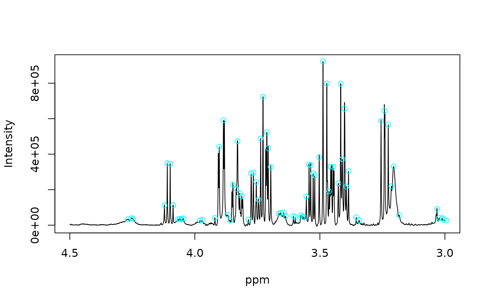

Finds local extrema in 1D spectra using Savitzky–Golay first and second derivatives. Candidate peaks are identified at zero-crossings of the first derivative and classified by the sign of the second derivative. Optional filters control peak height, prominence, SNR, curvature and minimum separation.
Arguments
- X
Numeric matrix or vector. Spectra in rows.
- ppm
Numeric vector or NULL. If NULL, inferred from colnames(X).
- type
Character. "max", "min", or "both".
- fil_p
Integer. Polynomial order for SG filter.
- fil_n
Integer. Window length for SG filter (odd).
- noise_win
Numeric length-2 vector or NULL. Ppm window used to estimate noise per spectrum. If NULL, a robust noise estimate is computed from the full spectrum (MAD of first differences).
- min_snr
Numeric. Minimum SNR (peak height / noise). Set NULL to disable.
- min_height
Numeric. Minimum absolute peak height (in original intensity units). NULL disables.
- min_prominence
Numeric. Minimum local prominence. NULL disables.
- prom_half_window_ppm
Numeric. Half-window (ppm) for prominence estimation around each peak.
- min_distance_ppm
Numeric. Minimum separation between peaks (ppm). NULL disables.
- min_curvature
Numeric. Minimum absolute curvature at peak (|d2|). NULL disables.
- keep_cols
Character. Extra columns to keep (default keeps all computed).
Value
List of data.frames (one per spectrum). Each contains: idc, ppm, Int, Etype (+1 max, -1 min), height, snr, curvature, prominence.
Examples
data(covid)
X <- covid$X
ppm <- covid$ppm
peaklist <- ppick2(X[1,], ppm, min_snr=50)
plot_spec(X[1, ], ppm, shift = c(3, 4.5), backend='base')
points(peaklist[[1]]$ppm, peaklist[[1]]$Int, col = "cyan")

head(peaklist[[1]])
#> idc ppm Int Etype height snr curvature prominence
#> 76 926 4.267179 33135.11 1 33135.11 66.63204 -79.60716 7459.445
#> 77 971 4.253429 39609.04 1 39609.04 79.65059 -228.41090 13933.375
#> 79 993 4.246706 35544.18 1 35544.18 71.47649 -33.20873 9868.517
#> 100 1403 4.121428 111466.69 1 111466.69 224.15055 -5230.31365 100350.064
#> 101 1440 4.110123 349278.95 1 349278.95 702.37191 -18388.87714 340139.674
#> 102 1478 4.098511 346193.60 1 346193.60 696.16751 -18433.68025 335076.973